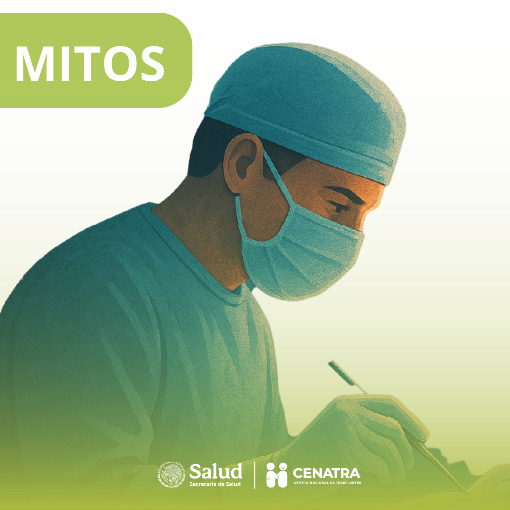
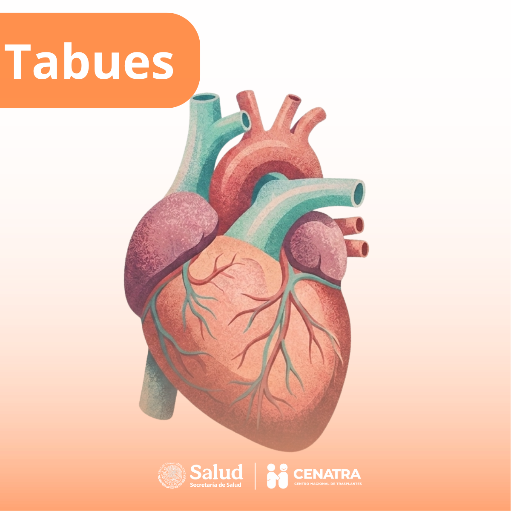

Mitos
Aclaremos la información.
Desmentimos creencias falsas y respondemos las dudas más comunes sobre la donación y el trasplante de órganos.
Leer másAcervo educativo

El Centro Nacional de Trasplantes es el órgano responsable de impulsar y coordinar los procesos desde la donación hasta el trasplante de órganos, tejidos y células, desarrollando el marco regulatorio para favorecer el desempeño de los integrantes del Subsistema Nacional de Donación y Trasplantes, otorgando a los pacientes que así lo requieran una mayor oportunidad con legalidad y seguridad.
Ser el órgano rector que dirija, coordine y regule la actividad de donación y trasplantes de órganos y tejidos en el Subsistema Nacional de Donación y Trasplantes en México, destacando ante el Sistema Nacional de Salud, con mayores cifras de pacientes beneficiados, dentro de estándares de calidad, equidad, altruismo y justicia.

Desmentimos creencias falsas y respondemos las dudas más comunes sobre la donación y el trasplante de órganos.
Leer más
Exploramos temas sensibles, miedos y barreras culturales que influyen en la decisión de donar.
Leer más
Descubre información relevante, testimonios reales sobre la donación y los trasplantes.
Leer más
Director General
Centro Nacional de Trasplantes
Es la toma de órganos y tejidos sanos de una persona para trasplantarlos a otras personas que los necesitan para salvar o mejorar su calidad de vida. Es un acto altruista, solidario y gratuito.
En vida, hombres y mujeres mayores de 18 años que se encuentren sanos. Después de la vida, se consideran potenciales donadores a personas de entre 2 y 80 años, dependiendo de la evaluación médica en el momento del deceso.
Puedes registrarte obteniendo tu Tarjeta de Donador Voluntario a través del portal oficial del CENATRA, o firmando el Documento Oficial de Donación. Sin embargo, lo más importante es comunicar tu decisión a tu familia.
Sí. De acuerdo con la Ley General de Salud en México, aunque cuentes con tu tarjeta de donador, al momento del fallecimiento se pedirá el consentimiento de los familiares directos. Por eso es vital que ellos conozcan tu voluntad de donar.